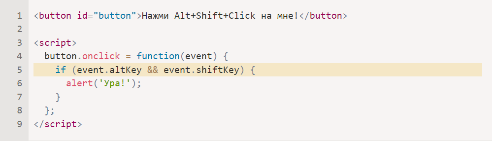

JavaScript
JavaScript — это полноценный динамический язык программирования, который применяется к HTML документу, и может обеспечить динамическую интерактивность на веб-сайтах
Языки «над» JavaScript
- CoffeeScript добавляет «синтаксический сахар» для JavaScript. Он вводит более короткий синтаксис, который позволяет писать чистый и лаконичный код. Обычно такое нравится Ruby-программистам.
- TypeScript концентрируется на добавлении «строгой типизации» для упрощения разработки и поддержки больших и сложных систем. Разработан Microsoft.
-
Flow тоже добавляет типизацию, но
иначе. Разработан Facebook.
- Добавлять новый HTML-код на страницу, изменять существующее содержимое, модифицировать стили.
- Реагировать на действия пользователя, щелчки мыши, перемещения указателя, нажатия клавиш.
- Отправлять сетевые запросы на удалённые сервера, скачивать и загружать файлы (технологии AJAX и COMET).
- Получать и устанавливать куки, задавать вопросы посетителю, показывать сообщения.
- Запоминать данные на стороне клиента («local storage»).
- Dart стоит особняком, потому что имеет собственный движок, работающий вне браузера (например, в мобильных приложениях). Первоначально был предложен Google, как замена JavaScript, но на данный момент необходима его транспиляция для запуска так же, как для вышеперечисленных языков.
- Brython транспилирует Python в JavaScript, что позволяет писать приложения на чистом Python без JavaScript.
Добавлять новый HTML-код на страницу, изменять существующее содержимое, модифицировать стили. Реагировать на действия пользователя, щелчки мыши, перемещения указателя, нажатия клавиш. Отправлять сетевые запросы на удалённые сервера, скачивать и загружать файлы (технологии AJAX и COMET). Получать и устанавливать куки, задавать вопросы посетителю, показывать сообщения. Запоминать данные на стороне клиента («local storage»).
| Method | Description |
|---|---|
| getElementById() | Returns the element that has the specified ID. |
| addEventListener() | Attaches an event handler to the specified element. |
| querySelector() | Returns the first element that matches a specified CSS selector(s) in the document. |
| fetch() | Fetches resources using the Fetch API. |